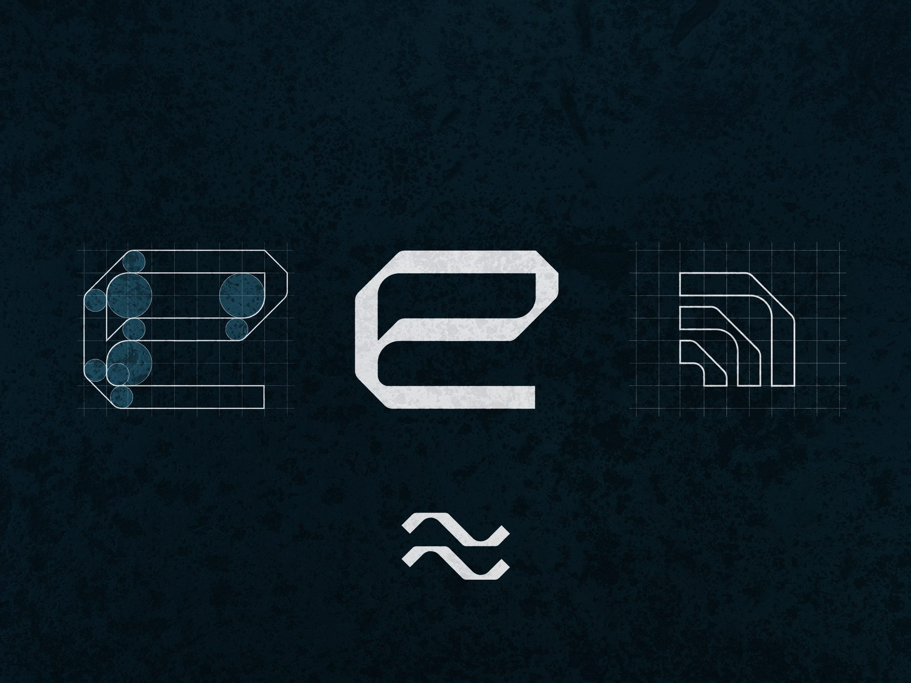
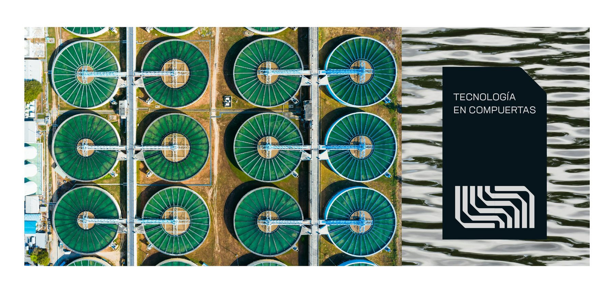
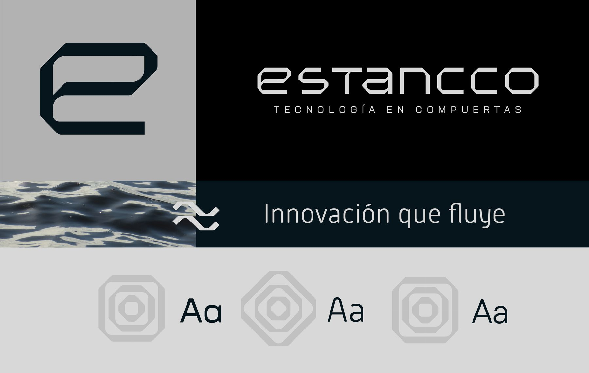
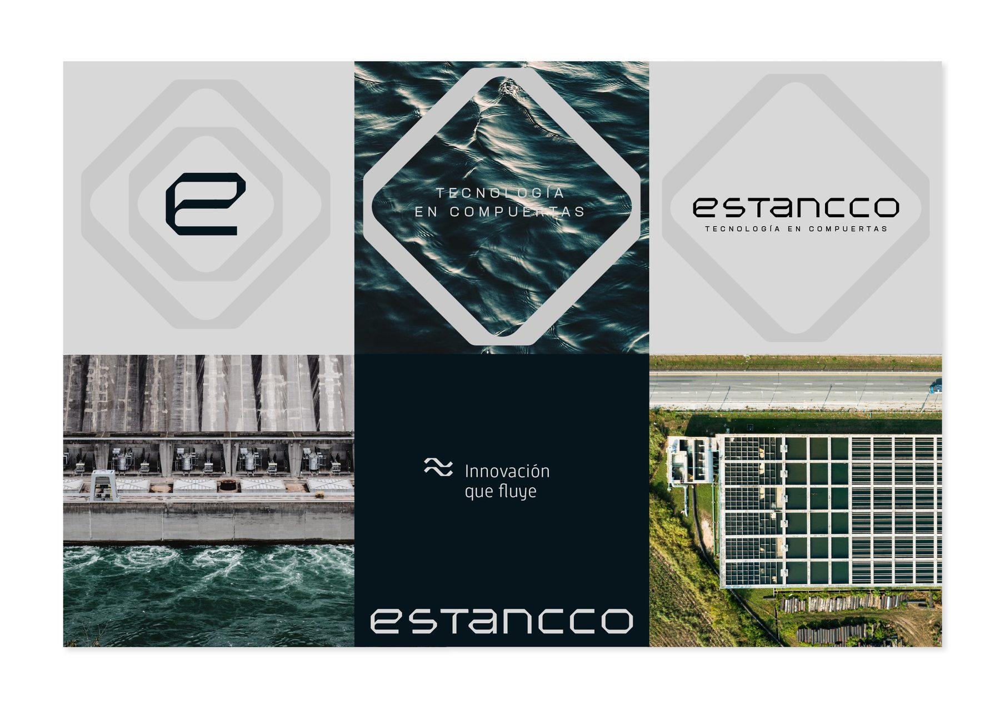
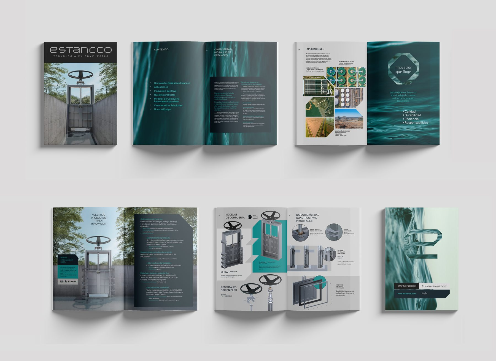
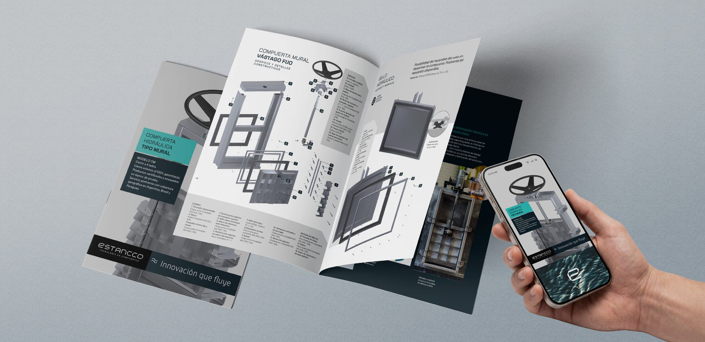
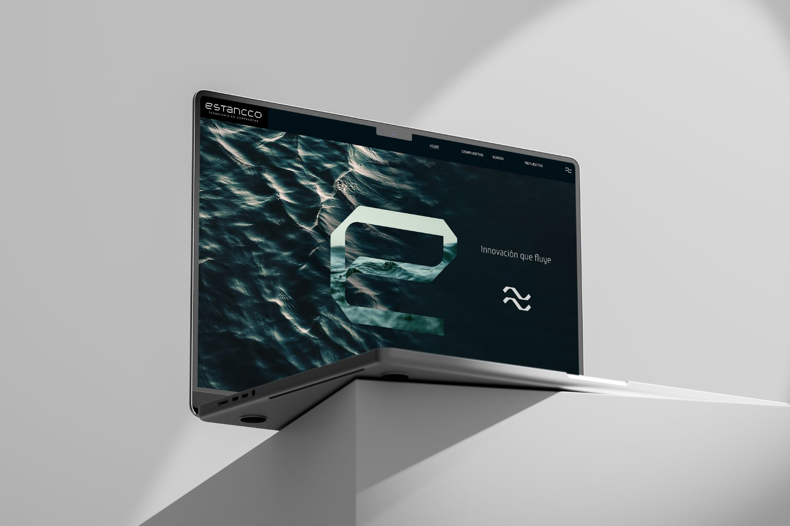

Selling continuity, not steel

The situation
The company manufactures hydraulic gates for water treatment plants and critical infrastructure. The product is patented, pressure-tested on its own bench, and monitored by an automated control system.
In tenders, it was losing to metal workshops.
Buyers were comparing it by weight of steel and cost of welding (the only terms the documentation gave them). Everything that made the product different was real, and none of it was legible.
What was hard
The gate's actual advantage was not mechanical. It was economic: it can be serviced and re-parted without draining the plant. For a municipal utility, that means no city left without water for days, no cubic metres of treated water dumped, no re-dosing of treatment chemicals.
That advantage was invisible for a structural reason: a tender is not decided by one person. Three profiles sign off, and they want opposite things.
- The contractor needs local availability, regional spare parts, simple assembly.
- The site engineer needs calculation rigour, patents, verified sealing (enough evidence to put a signature behind it).
- The owner needs zero plant stoppages, cost predictability, institutional reputation.
One flat technical document was being asked to convince all three. It convinced none of them.
What we decided
Stop describing the object. Design the decision.
The product was moved out of the metalwork category and into asset management: the gate is not a piece of steel, it is an insurance policy on operational continuity. Every asset was then built to give one specific decision-maker what they needed in order to say yes:
- The owner gets the cost avoided (no stoppage penalties, no chemical waste).
- The engineer gets technical backing (patents, test-bench data, sealing guarantees).
- The contractor gets operational speed (standardised parts, guaranteed regional stock).
Regional spare-part stock was raised from a logistics detail to a core institutional message. In infrastructure, imported or informal suppliers leave projects orphaned when a part fails. Naming that guarantee up front disarmed the buyer's main fear, and became a barrier to entry for outside competitors.
The system
- Layered tender documentation. Pressure calculations and simulations sitting alongside the financial translation of the same fact, so a finance officer and a civil engineer could each read the value in their own language inside one document.
- 3D renders. Cutaways exposing internal layers, materials and the sealing system: structural calculation made visible instead of abstract.
- Technical video. The test bench under hydraulic pressure, and part replacement performed without draining the plant. For financial and political decision-makers, this was the proof that mattered.
- Corporate sales brochure. An editorial piece built for procurement tables, arguing ROI through avoided downtime.
- Assembly datasheets. Manual and automated opening specs, assembly sequence, regional parts availability.
- Institutional website. Two axes: decompressing the technical complexity, and transferring the value of the parent company's in-house engineering team.
What changed
The company stopped competing on the price of steel. A regional innovation, born from a problem on a civil works site, became a hydraulic engineering brand that could hold its own in international specification.
The design work was not decoration. It was the interface that let the market compute what was already inside the product.







I help technically complex companies to align perception with capability. Let’s talk.